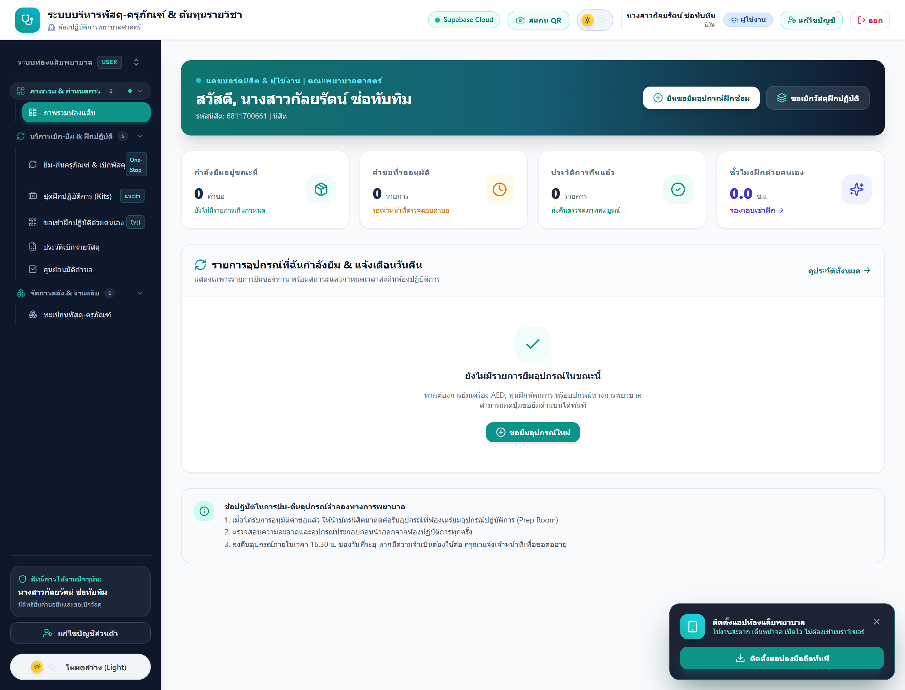
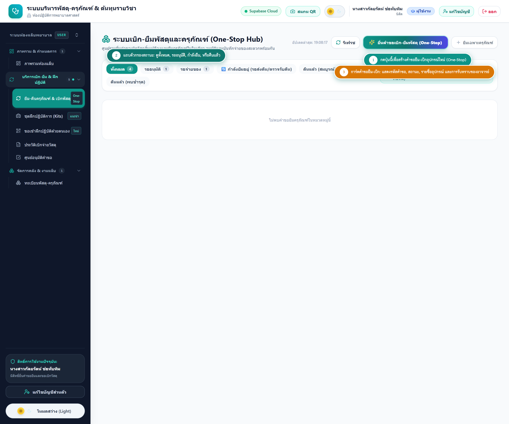
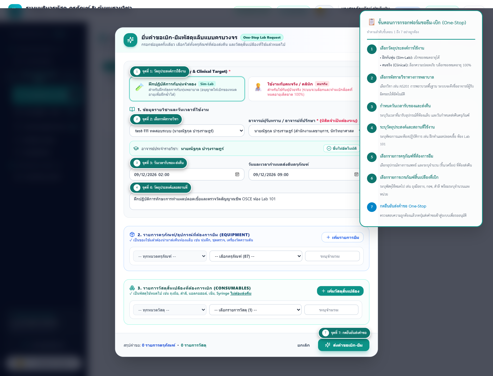
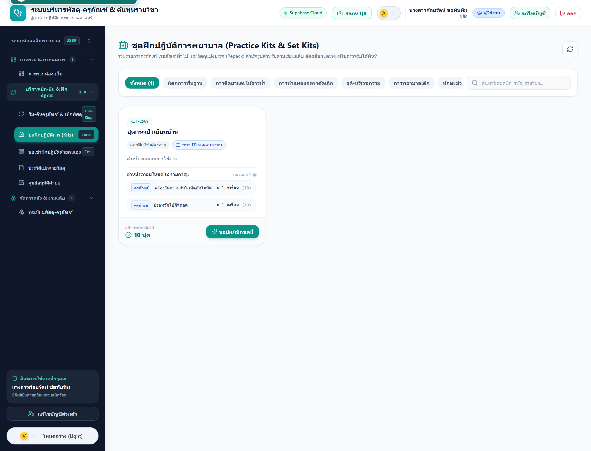
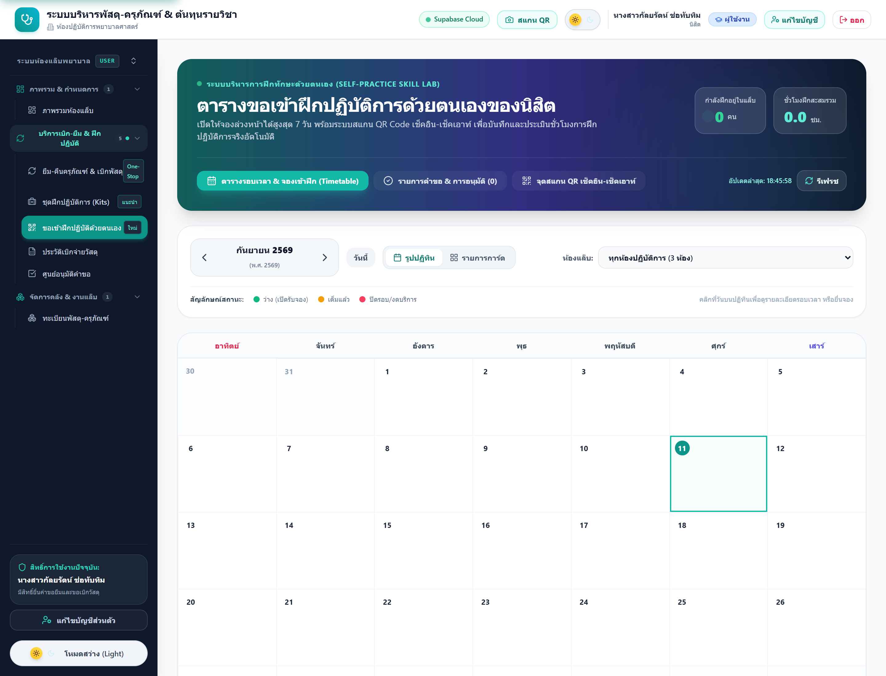

คู่มือการใช้งานระบบห้องปฏิบัติการพยาบาลศาสตร์
สำหรับนิสิตพยาบาลศาสตร์ (Student User Manual)
คณะพยาบาลศาสตร์ มหาวิทยาลัย • ฉบับภาพจากระบบจริงพร้อมขั้นตอน 1 2 3 4 อย่างละเอียด
🔑 บทที่ 1: การเข้าสู่ระบบ (Student Login)
เข้าสู่ระบบผ่านเว็บเบราว์เซอร์ของมหาวิทยาลัย โดยระบุรหัสนิสิตและรหัสผ่านตามขั้นตอนดังนี้:

ขั้นตอนที่ 1: กรอกรหัสนิสิต / บัญชีผู้ใช้งาน
กรอกรหัสนิสิต (เช่น 6811700661) หรืออีเมลมหาวิทยาลัย (@ku.th)
ขั้นตอนที่ 2: กรอกรหัสผ่าน (Password)
กรอกรหัสผ่านบัญชีนิสิตของตนเอง
ขั้นตอนที่ 3: กดปุ่ม "เข้าสู่ระบบ (Sign In)"
ระบบจะตรวจสอบสิทธิ์และนำเข้าสู่หน้าจอหลักของนิสิตทันที
📊 บทที่ 2: ผังงานขั้นตอนการทำงานมาตรฐาน (Standard Flowcharts)
ผังงานมาตรฐานสากล ISO 5807 เส้นตรงชัดเจน (Linear Flow) ไม่โค้งไปมา เพื่อให้อ่านเข้าใจง่าย:
2.1 ผังงานภาพรวมการใช้งานของนิสิต (Overall Student Lifecycle)

2.2 ผังงานการยืม-เบิก One-Stop และระบบ Patient Safety Lock

กระบวนการทำงานของผังงานที่ 2:
- เลือกรหัสรายวิชา: นิสิตเลือกรหัสวิชา ระบบจะผูกชื่ออาจารย์ผู้รับผิดชอบให้อัตโนมัติ
- ระบุวัน-เวลานัดหมายรับของและส่งคืน: พร้อมระบุวัตถุประสงค์และสถานที่ใช้งาน
- เลือกรายการครุภัณฑ์และเวชภัณฑ์: รวมทั้งอุปกรณ์ส่งคืนและวัสดุสิ้นเปลืองในคำขอเดียว
- ตรวจสอบเงื่อนไขความปลอดภัย (Patient Safety Lock):
- กรณีใช้งานกับคนจริง / คลินิก (Clinical Patient): ระบบจะล็อกความปลอดภัย กรองเฉพาะล็อตที่ยังไม่หมดอายุ 100% หากไม่พอยอดจะถูกปฏิเสธทันทีเพื่อความปลอดภัยของผู้ป่วย
- กรณีฝึกปฏิบัติกับหุ่นจำลอง (Sim-Lab): ระบบอนุญาตให้เบิกเวชภัณฑ์หมดอายุได้เพื่อประหยัดงบประมาณของคณะ
- ส่งคำขอและอนุมัติ: แจ้งเตือนอาจารย์รับทราบ และส่งให้เจ้าหน้าที่แล็บตรวจจ่ายอุปกรณ์
2.3 ผังงานการจองห้องแล็บและ Check-in สแกนเข้าห้อง

📑 บทที่ 3: ภาพรวมรายการคำขอและขั้นตอนการยืม-เบิก One-Stop (ภาพจากระบบจริง)
เมื่อนิสิตเข้าสู่เมนู "ยืม-คืนอุปกรณ์" ระบบจะแสดงหน้าจอภาพรวม (Overview Dashboard) แสดงรายการคำขอของนิสิตพร้อมสถานะการดำเนินการแบบเรียลไทม์ ดังรูปที่ 3.1:

จากหน้าจอภาพรวม นิสิตสามารถตรวจสอบประวัติและสถานะคำขอของตนเองได้ 4 สถานะหลัก ได้แก่:
- รออนุมัติ (PENDING): คำขอถูกส่งเข้าระบบแล้ว อยู่ระหว่างรออาจารย์ผู้รับผิดชอบรายวิชารับทราบ และเจ้าหน้าที่ห้องปฏิบัติการตรวจสอบความถูกต้อง
- อนุมัติแล้ว (APPROVED): คำขอได้รับการอนุมัติเรียบร้อยแล้ว นิสิตสามารถมารับอุปกรณ์ได้ตามวัน-เวลาที่ระบุ
- รับอุปกรณ์แล้ว (DISPENSED): นิสิตมาติดต่อรับอุปกรณ์และเวชภัณฑ์ไปใช้งานแล้ว โดยต้องนำครุภัณฑ์มาส่งคืนตามกำหนดเวลา
- คืนแล้ว (RETURNED): นำครุภัณฑ์ส่งคืนเจ้าหน้าที่ตรวจรับความสมบูรณ์และปิดคำขอสมบูรณ์
เมื่อต้องการสร้างคำขอยืม-เบิกใหม่ ให้กดปุ่ม "+ ขอยืม-เบิกอุปกรณ์ (One-Stop)" ที่มุมขวาบน ระบบจะเปิดหน้าต่างฟอร์มรวมดังรูปที่ 3.2 ให้นิสิตกรอกข้อมูลตามหมายเลขกำกับในแต่ละช่องดังนี้:

จุดที่ 1: เลือกวัตถุประสงค์การใช้งาน (Use Target & Patient Safety Lock)
• 🧪 ฝึกปฏิบัติการกับหุ่นจำลอง (Sim-Lab) [แนะนำ]: สำหรับซ้อมในห้องแล็บ ระบบอนุญาตให้ใช้เวชภัณฑ์หมดอายุได้เพื่อประหยัดงบประมาณ
• 🧑⚕️ ใช้งานกับคนจริง / คลินิก (Clinical Patient): สำหรับใช้กับผู้ป่วยจริง ระบบจะบล็อกล็อตหมดอายุ 100% เพื่อความปลอดภัยสูงสุด
จุดที่ 2: เลือกรหัสรายวิชาทางการพยาบาล
เลือกรหัสวิชาที่ขอใช้อุปกรณ์ เช่น NS201 การพยาบาลพื้นฐาน ระบบจะดึงชื่ออาจารย์ผู้รับผิดชอบรายวิชาขึ้นให้อัตโนมัติ นิสิตไม่ต้องพิมพ์เอง
จุดที่ 3: ระบุวัน-เวลาที่รับของ และกำหนดวันส่งคืน
• วัน-เวลาที่ต้องการรับของ: วันเวลาที่นิสิตจะเดินทางมารับอุปกรณ์ที่เคาน์เตอร์ห้องแล็บ
• กำหนดวันส่งคืนครุภัณฑ์: วันเวลาที่ต้องนำครุภัณฑ์มาส่งคืนหลังเสร็จสิ้นการเรียนการสอน
จุดที่ 4: ระบุวัตถุประสงค์และสถานที่ใช้งาน
พิมพ์ระบุหัตถการและห้องเรียน เช่น "ฝึกทักษะการทำแผลปลอดเชื้อและตรวจวัดสัญญาณชีพ OSCE ห้อง Lab 101"
จุดที่ 5: เลือกรายการครุภัณฑ์ที่ยืม (Equipment)
ค้นหาและเลือกอุปกรณ์ทางการแพทย์ เช่น หุ่นฝึก, เครื่องวัดความดัน, Stethoscope พร้อมระบุจำนวนที่ต้องการยืม
จุดที่ 6: เลือกรายการเวชภัณฑ์สิ้นเปลืองที่ขอเบิก (Consumables)
ค้นหาวัสดุใช้หมดไป เช่น ถุงมือตรวจโรค, ผ้ากอซสเตอไรล์, สำลี พร้อมระบุจำนวนและหน่วยบรรจุ
จุดที่ 7: กดปุ่ม "🚀 ยืนยันและส่งคำขอ One-Stop"
เมื่อตรวจสอบข้อมูลครบถ้วนแล้ว ให้กดปุ่มเพื่อส่งคำขอเข้าสู่ระบบเพื่อรออาจารย์และเจ้าหน้าที่อนุมัติ
📦 บทที่ 4: การขอเบิกชุดฝึกปฏิบัติการสำเร็จรูป (Nursing Practice Kits)
ชุด Box Set สำเร็จรูปตามหัตถการทางการพยาบาล สะดวก รวดเร็ว ขอเบิกได้ในคลิกเดียว:

ขั้นตอนที่ 1: เลือกชุด Box Set ตามหัตถการ
เลือกชุดที่ต้องการ เช่น ชุดทำแผลปลอดเชื้อ, ชุดฝึกสวนปัสสาวะ, ชุดตรวจสัญญาณชีพ
ขั้นตอนที่ 2: กดปุ่ม "⚡ ขอเบิกชุดนี้ทันที (One-Click)"
ระบบจะดึงรายการอุปกรณ์และเวชภัณฑ์ทั้งหมดในชุดให้อัตโนมัติ สะดวก ไม่ต้องเลือกทีละชิ้น
📅 บทที่ 5: การขอเข้าฝึกปฏิบัติการด้วยตนเองและการ Check-in
นิสิตสามารถจองห้องแล็บและเตียงฝึกนอกเวลาเรียนเพื่อทบทวนหัตถการก่อนสอบ OSCE:


ขั้นตอนที่ 1: เลือกห้องปฏิบัติการและวันที่ฝึก
เลือกห้องปฏิบัติการและวันที่ต้องการฝึกซ้อม
ขั้นตอนที่ 2: เลือกรอบเวลา (Time Slot) ที่มีที่ว่าง
เลือกรอบเวลาฝึกที่เปิดให้บริการ โดยรอบที่ว่างจะแสดงจำนวนที่นั่งสีเขียว
ขั้นตอนที่ 3: ยืนยันการจอง และรับบัตร Digital E-Ticket
ระบบจะออกบัตร E-Ticket พร้อม QR Code ประจำรอบการจอง
ขั้นตอนที่ 4: สแกน QR Code Check-in หน้าห้องแล็บ
เดินทางมาถึงหน้าห้องก่อนเวลา 5 นาที แล้วนำ QR Code ไปสแกนเช็คอินเพื่อบันทึกชั่วโมงฝึก
🛡️ บทที่ 6: การส่งคืนอุปกรณ์และข้อพึงระวังความปลอดภัย
ห้ามนำเวชภัณฑ์ที่มีป้ายกำกับ "สำหรับฝึกกับหุ่นจำลองเท่านั้น (For Simulation Only)" ไปใช้กับผู้ป่วยจริงบนหอผู้ป่วยโดยเด็ดขาด
ขั้นตอนการส่งคืนครุภัณฑ์:
- ทำความสะอาดอุปกรณ์และจัดเก็บเข้าชุดให้เรียบร้อยตามตำแหน่งเดิม
- นำส่งคืน ณ เคาน์เตอร์ห้องปฏิบัติการตามกำหนดเวลา
- เจ้าหน้าที่ตรวจรับความสมบูรณ์และกดปิดสถานะเป็น
RETURNEDในระบบ